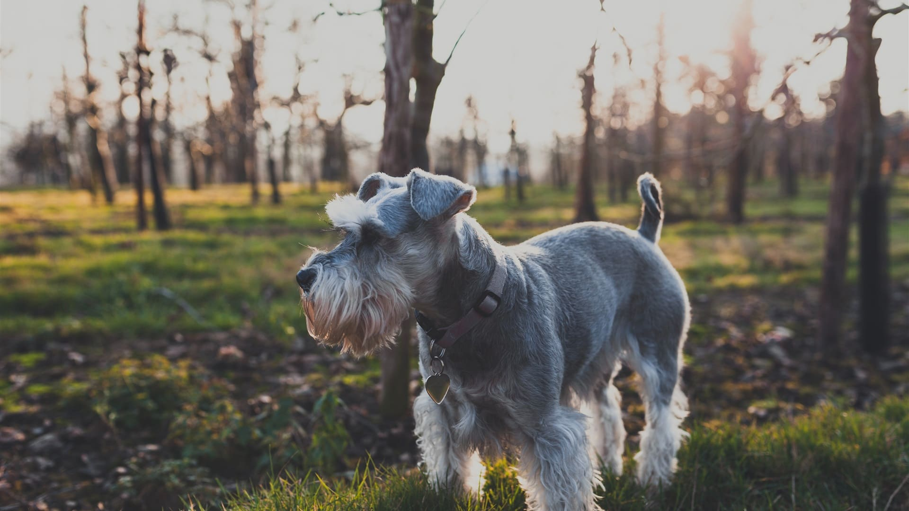

Rescate y Esperanza: La Labor en la Vida de Perros y Gatos Callejeros
En las calles de nuestras ciudades, muchos perros y gatos enfrentan una vida de peligros y privaciones. La labor de este movimiento se erige como una luz de esperanza para estos animales. La organización se dedica a rescatar a los peluditos que viven en condiciones adversas, proporcionarles atención médica y encontrarles un hogar amoroso. Su trabajo no solo transforma vidas, sino que también inspira a la comunidad a unirse en la causa del bienestar animal. Cada rescate es una historia de segunda oportunidad, cada adopción es un nuevo capítulo lleno de promesas y amor.
La primera etapa del trabajo de Huellas de amor es el rescate. Voluntarios y profesionales se movilizan para localizar a los animales en situación de calle, ya sea mediante patrullajes en áreas conocidas o respondiendo a reportes de ciudadanos preocupados. Estos rescates no solo son un acto de compasión, sino también una intervención crucial para prevenir el sufrimiento continuo de los animales. Los perros y gatos rescatados son llevados a refugios donde reciben atención inmediata, incluyendo comida, agua y atención veterinaria. Este proceso es fundamental para estabilizar su salud y prepararlos para una recuperación completa.
Subtitulo
En el refugio, los animales reciben una evaluación exhaustiva. Se les realizan chequeos médicos, vacunas y tratamientos para cualquier enfermedad o lesión. La rehabilitación va más allá de lo físico; también se trabaja en su bienestar emocional. Muchos de estos animales han sufrido traumas, y la socialización es clave para ayudarlos a adaptarse a un entorno más seguro y amigable. La paciencia y el cuidado durante esta etapa son esenciales para preparar a los animales para una futura adopción.
El siguiente paso es el proceso de adopción, que está diseñado para asegurar que cada animal encuentre el hogar adecuado. Los posibles adoptantes pasan por una serie de evaluaciones para garantizar que puedan proporcionar un ambiente adecuado y amoroso. Este proceso incluye entrevistas, visitas domiciliarias y orientación sobre el cuidado del nuevo miembro de la familia. El objetivo es no solo encontrar un hogar, sino un hogar en el que el animal pueda prosperar y ser querido.
El impacto de Huellas de amor es notable. Desde su fundación, han rescatado a miles de animales, muchos de los cuales han encontrado familias amorosas y permanentes. El trabajo de la organización también incluye la educación y concienciación de la comunidad sobre la importancia de la adopción responsable y el cuidado de los animales. Su labor es un testimonio de lo que se puede lograr con pasión y dedicación.
Si deseas apoyar la causa de Huellas de amor, hay varias formas en las que puedes contribuir. Las donaciones financieras son siempre bienvenidas y ayudan a cubrir los gastos de atención médica y mantenimiento de los refugios. El voluntariado es otra manera efectiva de contribuir, ya sea ayudando en el refugio, participando en eventos de adopción o en campañas de sensibilización. Además, considerar la adopción de un animal rescatado puede ser una de las formas más gratificantes de apoyar la misión de la ONG.
En conclusión, el trabajo de Huellas de amor es esencial para brindar una nueva oportunidad a los animales que más lo necesitan. Cada rescate, cada cuidado y cada adopción son pasos hacia un futuro más brillante para los perros y gatos callejeros. Si quieres hacer una diferencia, infórmate sobre cómo puedes apoyar a [Nombre de la ONG] y ser parte de esta noble causa. Tu ayuda puede transformar vidas y ofrecer a estos animales el hogar y el amor que merecen.